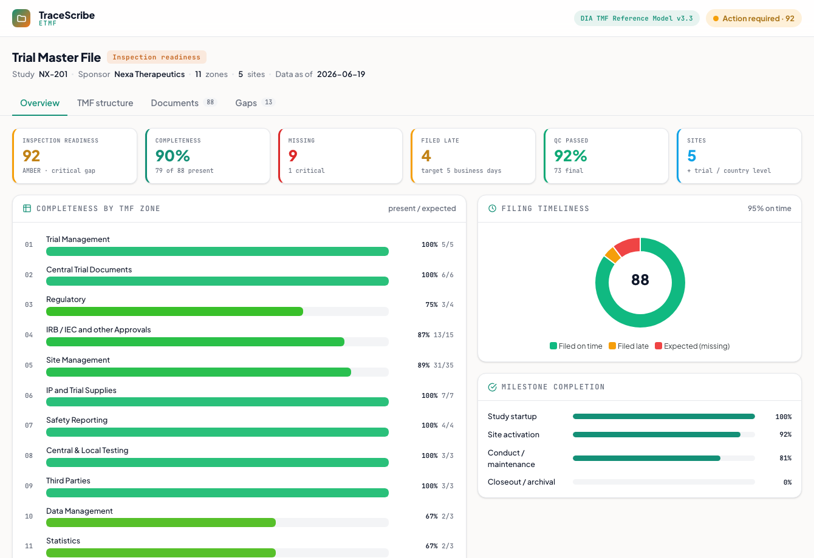

Electronic Trial Master File
An eTMF inspection-readiness dashboard: the GCP essential-document repository organized by the DIA TMF Reference Model, tracking completeness, timeliness, and quality, with a readiness status gated by missing critical documents.
What it does
Keeps the Trial Master File, the evidence that the trial was run to GCP (ICH E6), continuously inspection-ready. Every essential document is filed against the DIA TMF Reference Model and tracked for completeness, timeliness, and quality, so a sponsor can answer "could an inspector walk in today" at any moment.
How it works
- Organized by the DIA TMF Reference Model: 11 zones and ~249 artifacts numbered zone.section.artifact. Browse the structure zone by zone with completeness on every node.
- Completeness: present vs expected (the milestone-driven Expected Document List), reported by zone, by site (the Investigator Site File), and by milestone (startup to activation to conduct to closeout).
- Timeliness: documents filed within 5 business days of finalization count as on time; later filings are flagged, since the TMF must be contemporaneous.
- Quality and lifecycle: each document moves Expected to Draft to In QC to Final, and the QC pass rate is tracked.
- Inspection readiness: a composite of completeness, timeliness, and quality, gated so a missing core document (here, the regulatory authority approval) holds the status at Amber regardless of the score. File a missing document in the Gaps view and watch the readiness recompute.
A from-scratch recreation grounded in the DIA TMF Reference Model (v3.x, 11 zones, ~249 artifacts) and the standard TMF metrics (completeness / timeliness / quality, with the critical-gap gate). Synthetic study; the zone names and the verified artifact IDs are the real Reference Model, and every figure is computed from the document list.

Static preview - click to open the live, interactive demo